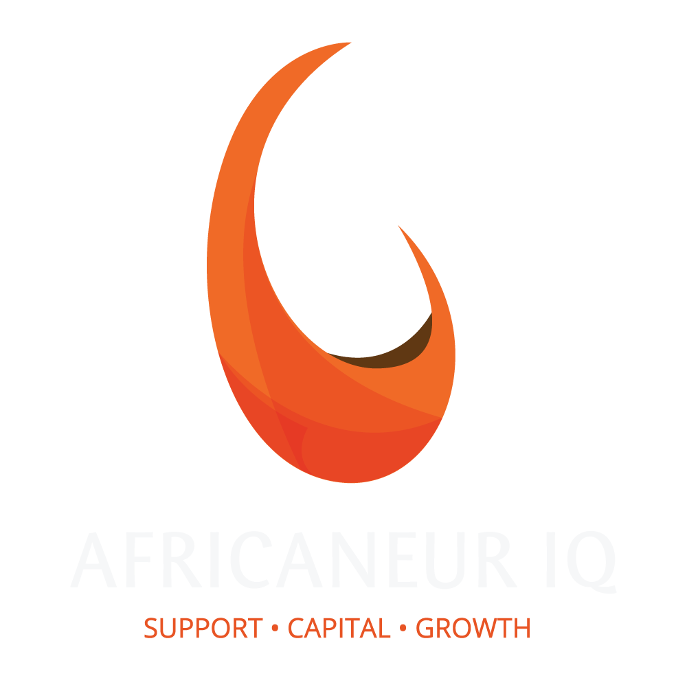

Support ● Capital ● Growth
Support ● Capital ● Growth
AfricaneurIQ (Pty) Ltd (AIQ) was established in 2014 when its founding members became disillusioned with the status quo of white-owned traditional incubators who have been cannibalizing the ED and SD budgets of large corporates to enrich themselves instead of delivering sustainable black economic empowerment by shifting significant preferential procurement of their clients to authentic and deserving level 1 and 2 Black-owned EME and QSE businesses.
AIQ developed the RESET model which it now utilizes to shift billions of rands worth of procurement towards its Beneficiaries, who are properly developed, strategically capacitated and adequately funded. AIQ works closely with the South African Department of Trade and Industry’s Black Industrial Support program to expedite black economic empowerment for the benefit of all South Africans.
AfricaneurIQ (AIQ) is professional service company that delivers rapid, equitable and sustainable economic transformation through a pioneering proprietary model anchored in Enterprise and Supplier Development in support of the Broad-Based Black Economic Empowerment Act.
We specialise in creating Black Industrialists by applying our unique methodology which accelerates the growth trajectory of black-owned start-up businesses with the vision of taking the first EME and QSE to public listing within the next 5 years.
We draw on an exclusive portfolio of aspiring entrepreneurs carefully selected and properly supported combining raw talent and business acumen to realise our vision. We develop Africaneurs!
AIQ is able to rapidly and authentically transform the supply chain of any blue-chip company in order to realize the spirit of economic transformation and go beyond simple compliance.
By leveraging Preferential Procurement and harnessing the concessions afforded to black entrepreneurs as legislated through Enterprise Development and Supplier Development, AIQ is uniquely capable to develop and capacitate black-owned start-ups that are then able to compete head-to-head on price, quality and service with some of the biggest historical generic suppliers and displace them with absolutely zero delivery risk to the blue-chip corporate. All of this within the first year of operation.
Very importantly the AIQ Beneficiaries, who are level 1 BO EME’s and QSE’s are suppliers of those commodities, products and services usually found in the top 20 suppliers-by value, of blue-chip companies. That is where real transformation is desperately required and where it really matters.
Gone are the days of ESD programs only delivering catering, stationery, PPE and landscaping suppliers.
AIQ has an ever-growing list of clients that includes major banks, insurance companies, industrial groups, ICT companies as well as major retail chains.
AIQ’s goal for 2022 is to deliver the following: 10 Beneficiaries that the meet JSE listing requirements with turnover exceeding R1bn p.a. 20 Beneficiaries that have an annual turnover of over R500m p.a. 100 Beneficiaries that have an annual turnover of over R50m p.a.
AIQ is ever mindful that company turnover is not the only key measure of success however should we achieve the goals above it would mean that AIQ was able to shift a cumulative R25bn in procurement towards our Level 1 and 2 EME and QSE start-up beneficiaries which would be a phenomenal achievement.